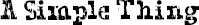

ABOUT AN HOUR later we were all seated in the giant auditorium waiting for Mr. Tushman to give his “middle-school address.” The auditorium was even bigger than I imagined it would be—bigger even than the one at Via’s school. I looked around, and there must have been a million people in the audience. Okay, maybe not a million, but definitely a lot.
“Thank you, Headmaster Jansen, for those very kind words of introduction,” said Mr. Tushman, standing behind the podium on the stage as he talked into the microphone. “Welcome, my fellow teachers and members of the faculty. …
“Welcome, parents and grandparents, friends and honored guests, and most especially, welcome to my fifth- and sixth-grade students. …
“Welcome to the Beecher Prep Middle School graduation ceremonies!!!”
Everyone applauded.
“Every year,” continued Mr. Tushman, reading from his notes with his reading glasses way down on the tip of his nose, “I am charged with writing two commencement addresses: one for the fifth- and sixth-grade graduation ceremony today, and one for the seventh- and eighth-grade ceremony that will take place tomorrow. And every year I say to myself, Let me cut down on my work and write just one address that I can use for both situations. Seems like it shouldn’t be such a hard thing to do, right? And yet each year I still end up with two different speeches, no matter what my intentions, and I finally figured out why this year. It’s not, as you might assume, simply because tomorrow I’ll be talking to an older crowd with a middle-school experience that is largely behind them—whereas your middle-school experience is largely in front of you. No, I think it has to do more with this particular age that you are right now, this particular moment in your lives that, even after twenty years of my being around students this age, still moves me. Because you’re at the cusp, kids. You’re at the edge between childhood and everything that comes after. You’re in transition.
“We are all gathered here together,” Mr. Tushman continued, taking off his glasses and using them to point at all of us in the audience, “all your families, friends, and teachers, to celebrate not only your achievements of this past year, Beecher middle schoolers—but your endless possibilities.
“When you reflect on this past year, I want you all to look at where you are now and where you’ve been. You’ve all gotten a little taller, a little stronger, a little smarter … I hope.”
Here some people in the audience chuckled.
“But the best way to measure how much you’ve grown isn’t by inches or the number of laps you can now run around the track, or even your grade point average—though those things are important, to be sure. It’s what you’ve done with your time, how you’ve chosen to spend your days, and whom you have touched this year. That, to me, is the greatest measure of success.
“There’s a wonderful line in a book by J. M. Barrie—and no, it’s not Peter Pan, and I’m not going to ask you to clap if you believe in fairies. …”
Here everyone laughed again.
“But in another book by J. M. Barrie called The Little White Bird … he writes …” He started flipping through a small book on the podium until he found the page he was looking for, and then he put on his reading glasses. “‘Shall we make a new rule of life … always to try to be a little kinder than is necessary?’”
Here Mr. Tushman looked up at the audience. “Kinder than is necessary,” he repeated. “What a marvelous line, isn’t it? Kinder than is necessary. Because it’s not enough to be kind. One should be kinder than needed. Why I love that line, that concept, is that it reminds me that we carry with us, as human beings, not just the capacity to be kind, but the very choice of kindness. And what does that mean? How is that measured? You can’t use a yardstick. It’s like I was saying just before: it’s not like measuring how much you’ve grown in a year. It’s not exactly quantifiable, is it? How do we know we’ve been kind? What is being kind, anyway?”
He put on his reading glasses again and started flipping through another small book.
“There’s another passage in a different book I’d like to share with you,” he said. “If you’ll bear with me while I find it. … Ah, here we go. In Under the Eye of the Clock, by Christopher Nolan, the main character is a young man who is facing some extraordinary challenges. There’s this one part where someone helps him: a kid in his class. On the surface, it’s a small gesture. But to this young man, whose name is Joseph, it’s … well, if you’ll permit me …”
He cleared his throat and read from the book: “‘It was at moments such as these that Joseph recognized the face of God in human form. It glimmered in their kindness to him, it glowed in their keenness, it hinted in their caring, indeed it caressed in their gaze.’”
He paused and took off his reading glasses again.
“It glimmered in their kindness to him,” he repeated, smiling. “Such a simple thing, kindness. Such a simple thing. A nice word of encouragement given when needed. An act of friendship. A passing smile.”
He closed the book, put it down, and leaned forward on the podium.
“Children, what I want to impart to you today is an understanding of the value of that simple thing called kindness. And that’s all I want to leave you with today. I know I’m kind of infamous for my … um … verbosity …”
Here everybody laughed again. I guess he knew he was known for his long speeches.
“… but what I want you, my students, to take away from your middle-school experience,” he continued, “is the sure knowledge that, in the future you make for yourselves, anything is possible. If every single person in this room made it a rule that wherever you are, whenever you can, you will try to act a little kinder than is necessary—the world really would be a better place. And if you do this, if you act just a little kinder than is necessary, someone else, somewhere, someday, may recognize in you, in every single one of you, the face of God.”
He paused and shrugged.
“Or whatever politically correct spiritual representation of universal goodness you happen to believe in,” he added quickly, smiling, which got a lot of laughs and loads of applause, especially from the back of the auditorium, where the parents were sitting.